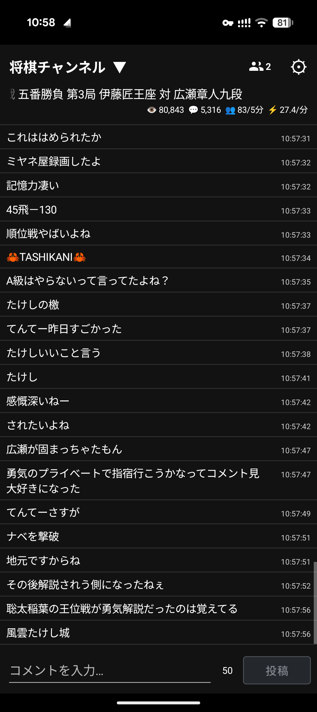
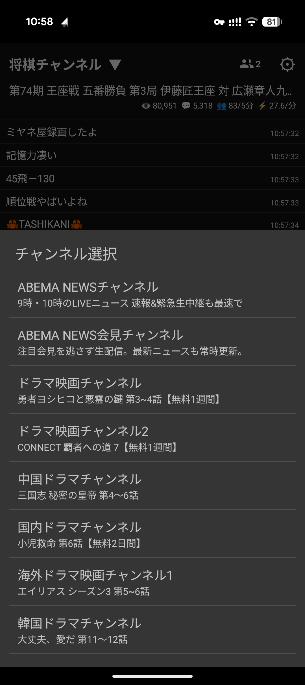

WINDOWS
Windows版
ABEMAのリアルタイムコメントをWindowsで快適に 閲覧・投稿できる、多機能コメントビューアです🐸
主な機能
- リアルタイムコメント表示
- コメント投稿
- ログ保存・検索
動作環境
Windows 10 / 11
インストール不要のポータブル版です。
WINDOWS / ANDROID
ABEMAのリアルタイムコメントを、
パソコンでもスマートフォンでも快適に閲覧・投稿🐸
WINDOWS
ABEMAのリアルタイムコメントをWindowsで快適に 閲覧・投稿できる、多機能コメントビューアです🐸
Windows 10 / 11
インストール不要のポータブル版です。
ANDROID
ABEMAのリアルタイムコメントをAndroidで快適に 閲覧・投稿できる、モバイル用コメントビューアです🐸
推奨：Android 12以降
Android 11以前では、端末のWebView / Chrome環境によって、 トークンを取得できない場合があります。 古い端末でも動作する可能性はありますが、動作保証はありません。
動作確認：Pixel 9aなど。
タブレットモードは、現在は基本未対応です。
本アプリは縦画面専用です。
画像をクリック・タップすると、元のサイズで開きます。
掲載画像は1.00のものです。




WINDOWS
更新日：2026年10月3日
対応環境：Windows 10 / 11
配布形式：Portable ZIP
ファイル名：
ABEMA.Comment.Viewer.RT.1.10.zip
ファイルサイズ：53.57 MiB（56,172,238バイト）
ZIPファイルをダウンロードして展開し、 展開先にあるアプリのEXEファイルを起動してください。 インストールは不要です。
本ソフトはPyInstallerで生成しているため、 一部のセキュリティソフトでヒューリスティック検出される場合があります。
検査対象は、Windows版1.10の配布ZIPファイルです。
対象：ABEMA.Comment.Viewer.RT.1.10.zip
A76832E3E5FD8920817A7D2E24D37540974C2F65F4ED5DEF4B8740E6564B709A
ANDROID
更新日：2026年10月2日
対応環境：Android 12以降
配布形式：APK
ファイル名：
ABEMA_Comment_Viewer_RT_for_Android_1.10.apk
ファイルサイズ：5.53 MiB（5,802,059バイト）
Chromeなどで「危険なファイルの可能性があります」といった 警告が表示される場合があります。 Google Playストア外で配布しているAPKでは、 このような警告が表示されることがあります。
確認用に、配布APKのSHA-256とVirusTotalの検査結果を掲載しています。
対象：Android版 1.10
223FA3F1DA3C005E69BBCE1271D1ED5938B29496157AE10DCC84F94E40FEEC1C
ユーザーコメントリストの更新操作と統計情報表示を改善。統計情報の表示位置を選択可能に。
正式版1.00。配布ZIPのサイズを削減。
チャンネル表示・トークン周りの表示などを変更。
絵文字表示を調整。スリープ復帰時の挙動などを変更。
一部機能を削除。ウィンドウ位置がずれる場合があった問題を修正。
NGユーザー管理画面などを追加。
Windows製品情報を追加。UPXを無効化。
インストール不要のポータブル版を公開。
細かな不具合を修正。
スクロール時の挙動を改善。
キーボード表示中でも、コメント一覧だけを上下にスクロールできるようにしました。
細かな不具合を修正。
コメント入力周りを調整。
タブレットモードなどを追加。
設定画面を変更。
Android版を公開しました。
本アプリの二次配布、およびZIP・APKなどの配布ファイルへの 直接リンクは禁止です。
本アプリをご紹介いただく際は、 必ず本サイトのトップページへリンクしてください。